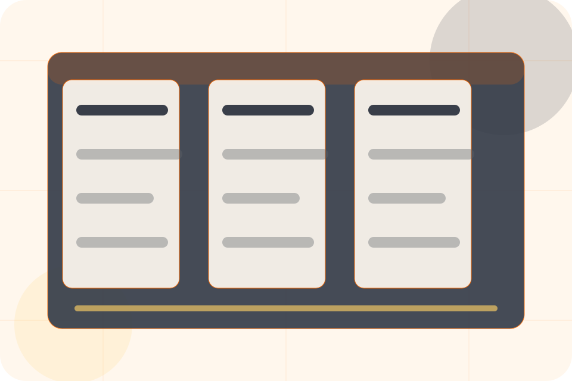
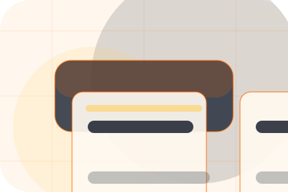
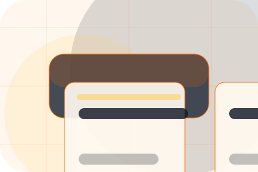
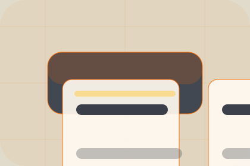

Details
What information helps Forge respond with a useful answer instead of a generic reply.
Contact / 01
Contact opens as a clear construction decision hub: what Forge offers, who it helps, why it matters, and which route to take first.
The first screen combines positioning, proof, primary action, and fast internal navigation, so people can act immediately or compare the rest of the contact route with context.
Worksite software hero
Select the closest route and Forge keeps the next step, proof, and follow-up expectation aligned with certainty around cost and disruption.

Contact / 02
Project makes the contact path concrete: what to send, how the response works, and what Forge needs before visitors request an estimate.
The section reduces contact friction by naming the channel, expected detail, privacy path, and response expectation instead of dropping visitors into a generic form.
Request EstimateForge keeps project practical: send the key details, choose the right contact route, and know what kind of reply to expect.
Request EstimateContact / 03
Upload makes the contact path concrete: what to send, how the response works, and what Forge needs before visitors request an estimate.
The section reduces contact friction by naming the channel, expected detail, privacy path, and response expectation instead of dropping visitors into a generic form.
Request EstimateWhat information helps Forge respond with a useful answer instead of a generic reply.
How the visitor should think about response, urgency, location, or availability.

The expected next message keeps scope, timing, and the first practical step clear.
Contact / 04
Location makes the contact path concrete: what to send, how the response works, and what Forge needs before visitors request an estimate.
The section reduces contact friction by naming the channel, expected detail, privacy path, and response expectation instead of dropping visitors into a generic form.
Request EstimateWhat information helps Forge respond with a useful answer instead of a generic reply.
Contact / 05
Budget makes the contact path concrete: what to send, how the response works, and what Forge needs before visitors request an estimate.
The section reduces contact friction by naming the channel, expected detail, privacy path, and response expectation instead of dropping visitors into a generic form.
Request EstimateWhat information helps Forge respond with a useful answer instead of a generic reply.
How the visitor should think about response, urgency, location, or availability.
The expected next message keeps scope, timing, and the first practical step clear.
Contact / 06
Visit makes the contact path concrete: what to send, how the response works, and what Forge needs before visitors request an estimate.
The section reduces contact friction by naming the channel, expected detail, privacy path, and response expectation instead of dropping visitors into a generic form.
Request EstimateWhat information helps Forge respond with a useful answer instead of a generic reply.
How the visitor should think about response, urgency, location, or availability.
The expected next message keeps scope, timing, and the first practical step clear.
Contact / 07
Phone makes the contact path concrete: what to send, how the response works, and what Forge needs before visitors request an estimate.
The section reduces contact friction by naming the channel, expected detail, privacy path, and response expectation instead of dropping visitors into a generic form.
Request EstimateWhat information helps Forge respond with a useful answer instead of a generic reply.
How the visitor should think about response, urgency, location, or availability.
The expected next message keeps scope, timing, and the first practical step clear.
Contact / 08
Response makes the contact path concrete: what to send, how the response works, and what Forge needs before visitors request an estimate.
The section reduces contact friction by naming the channel, expected detail, privacy path, and response expectation instead of dropping visitors into a generic form.
Request Estimate
What information helps Forge respond with a useful answer instead of a generic reply.
Contact / 09
Submit makes the contact path concrete: what to send, how the response works, and what Forge needs before visitors request an estimate.
The section reduces contact friction by naming the channel, expected detail, privacy path, and response expectation instead of dropping visitors into a generic form.
Request EstimateWhat information helps Forge respond with a useful answer instead of a generic reply.
How the visitor should think about response, urgency, location, or availability.
The expected next message keeps scope, timing, and the first practical step clear.
Contact / 10
Forge closes the contact route with a clear action, a quick reminder of the value, and a low-friction way to request an estimate.
Visitors who are ready can use the primary action. Visitors who are still comparing can scan the section links, proof, and support routes before they request an estimate.
Request EstimateThe final block keeps the choice simple: act now, compare one more proof route, or send enough detail for a focused response.
Request Estimatecertainty around cost and disruption
A build-management site with construction CTAs, project panels, safety proof, and estimate routing. Contact ends with a direct path to request an estimate, plus enough context for visitors who still need to compare.

Request EstimateInformation is provided for planning and should be reviewed for the final client, location, and operating rules.